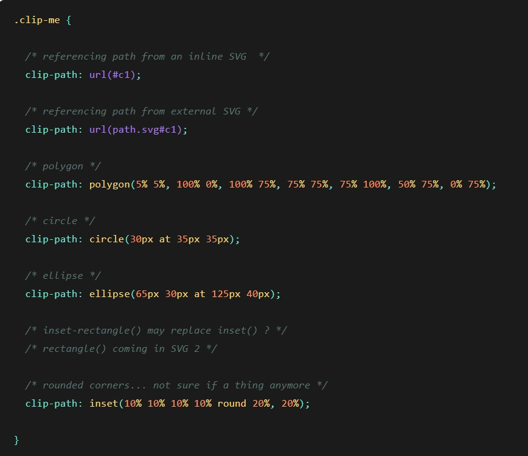

The mask-composite CSS property allows us to combine a mask layer image with the mask layers below it.
.element {
mask-composite: subtract;
}
.element {
mask-composite: add / subtract / intersect / exclude;
}
.element {
mask-image: url(circle.png), url(star.png), url(square.png);
mask-composite: exclude, subtract;
}
The default value. The mask image layer closer to the user (source) is placed on top of the next mask image layer (destination). The combination is the final mask layer.
The mask image layer closer to the user is placed where it falls outside of the next mask image layer. In other words, the final combination is portions of the destination that don’t overlap the source.
The portions of source that overlap the destination replace the destination. In other words, the final combination is portions of the destination that overlap the source.
Removes the current mask-composite from the element.
/* Keyword values */
mask-composite: add;
mask-composite: subtract;
mask-composite: intersect;
mask-composite: exclude;
